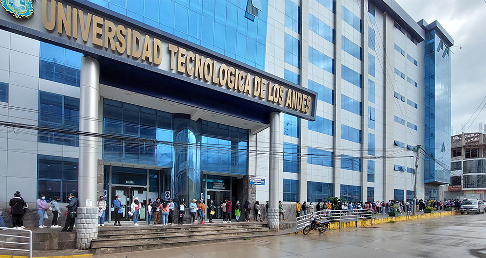
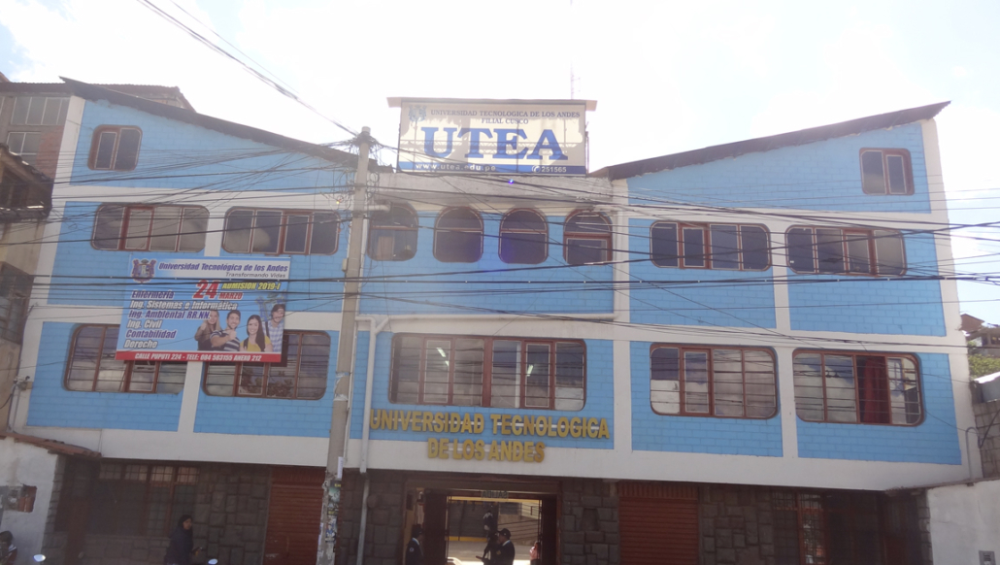

Fuleras UTEA
Confesiones, chismes, crushes y memes de la vida universitaria. Anónimo, irreverente y exclusivo para los exitosos uteínos de Andahuaylas, Abancay y Cusco.
Elige tu sede

Abancay Mucho calor, mucho drama y cero filtro. 0 fuleritas
Cusco Los turistas afuera, los chismes adentro. 0 fuleritasÚltimas fuleritas
Ojo: las fuleritas de esta página son ejemplos ficticios. Cualquier parecido con la realidad es pura coincidencia.
Andahuaylas
Aquí todo se sabe antes de que termine la clase. Filtra por facultad y chismea con responsabilidad (o sin ella).
✍️ Confesar desde AndahuaylasAbancay
Mucho calor, mucho drama y cero filtro. Todo lo que se dice en los pasillos, pero con el nombre bien guardado.
✍️ Confesar desde AbancayCusco
Los turistas afuera, los chismes adentro. Frío en el clima, calentito en el muro.
✍️ Confesar desde CuscoReglas
Antes de chismear, lee esto. Es corto, prometido. Más corto que tu paciencia en una exposición grupal.
¿Quiénes somos?
Somos los administradores anónimos de Fuleras UTEA: un grupo sin rostro y sin cargo que recoge las confesiones, chismes, crushes y memes de los exitosos uteínos de Andahuaylas, Abancay y Cusco.
No somos la universidad, no hablamos por la universidad y la universidad no nos respalda. Somos un espacio de humor y entretenimiento hecho por y para la comunidad.
Reglas de anonimato
Cero nombres completos
Nada de nombres, apellidos, DNI, teléfonos, correos ni redes sociales de nadie. Si se puede identificar a la persona, no se publica.
No te pedimos datos
Sin nombre, sin correo y sin cuenta para enviar. Tú tampoco dejes pistas sobre ti en tu texto.
Lo privado, privado
No se divulgan datos de salud, familia, ubicación o intimidad de terceros. Si no te lo contaron para que lo publiques, no lo publiques.
Reglas de respeto
Cero delitos
No se publican amenazas, extorsión, acoso, venta o consumo de drogas, ni nada que sea un delito. Esto es un muro de chismes, no una comisaría.
Humor sí, daño no
Nos reímos de las situaciones, no de las personas. Nada de burlas por apariencia, origen, orientación, discapacidad, religión o condición económica.
Nada de contenido sexual explícito ni de menores
Cero fotos íntimas, cero contenido sexual explícito y cero contenido que involucre a menores de edad. Sin excepciones.
Derecho a borrar
Nos reservamos el derecho de editar o eliminar cualquier publicación. Si te sientes aludido o afectado, pide que la retiren desde Contacto eligiendo la opción de borrado.
¿Algo serio? Si lo que viviste es acoso, violencia o algo que te está afectando de verdad, no lo dejes en un chisme: habla con alguien de confianza o acude a las autoridades. En Perú puedes comunicarte con la Línea 100 (violencia familiar y sexual) o con la Línea 113, opción 5 (salud mental, MINSA).
Suelta la fulerita
Sin nombre, sin correo, sin cuenta. Solo tú, tu conciencia y tu teclado.